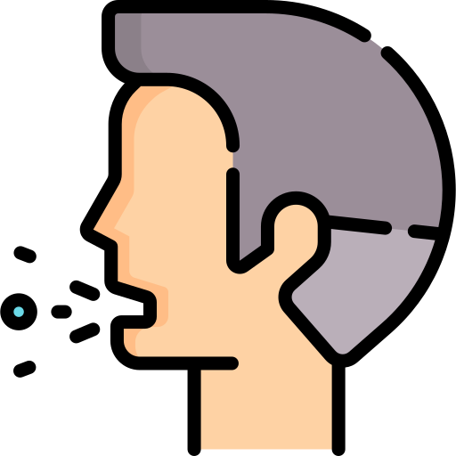
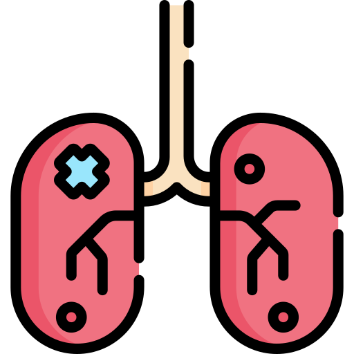
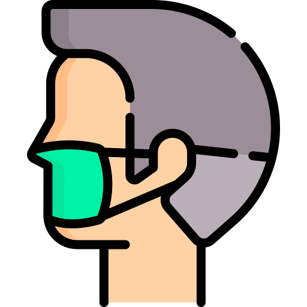

COVID-19
{{ date }}
Dati Globali
Nuovi Confermati
+ {{ global.NewConfirmed }}

Totale Confermati
{{ global.TotalConfirmed }}

Nuovi Decessi
+ {{ global.NewDeaths}}
Totale Decessi
{{ global.TotalDeaths}}

Nuovi Ricoveri
{{ global.NewRecovered}}
Totale Ricoveri
{{ global.TotalRecovered}}
Dati per Nazione
Filtra la nazione
Nazione
Nuovi contagi
Totale contagi
Nuovi decessi
Decessi totali
Nuovi ricoveri
Ricoveri totali
{{x.Country}}
{{x.NewConfirmed}}
{{x.TotalConfirmed}}
{{x.NewDeaths}}
{{x.TotalDeaths}}
{{x.NewRecovered}}
{{x.TotalRecovered}}